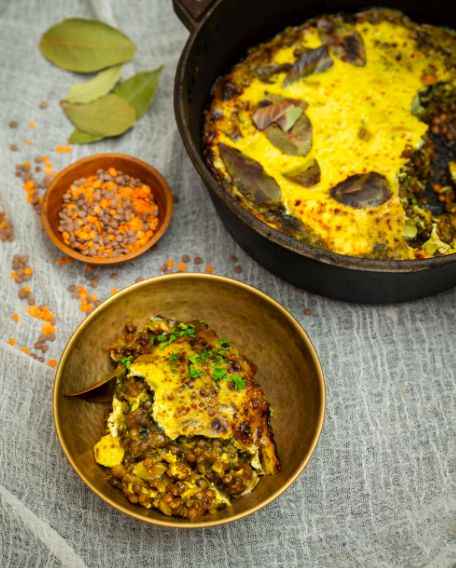

Bobotie

Bobotie is considered South Africa's national dish. It has its
origins in Cape Town and the Cape Malay cuisine known for
its fragrant dishes and use of spices. It is a dish that is
still eaten and loved in many a South African household. It has
truly stood the test and will likely remain popular for many
years to come.
Ingredients:
- oil to cook with
- salt & pepper to taste
- 2 x cans of lentils (drained)
- 1 x onion (chopped)
- 2 x carrot (grated)
- 3 x cloves garlic (crushed)
- 1 tbsp curry powder
- 1 tbsp turmeric
- 1 tsp cumin (whole or ground)
- 1 tsp coriander (ground)
- 1 tbsp apricot jam
- tomato paste
- lemon juice (1 lemon)
- 1/2 cup breadcrumbs
- 1 cup aquafaba
- 1 cup oat milk
- 3 x lemon leaves (or bay leaves)
- 1/2 cup raisins (optional)
Method:
- Fry the onions over medium coals in a large flat-bottom
cast iron pot. If you are unsure of the temperature rather
err to cold than too hot, if the food is burnt you need to
start over, if it is too cold you can always add more
coals.
- Add the spices and garlic and fry until the onions are
translucent.
- Add the carrots, tomato paste, apricot jam, and lemon
juice, (the zest is optional extra that makes it nice)
- Add the lentils and let everything cook through, the whole
mixture should smell amazing and stain everything yellow.
- Add the raisins and breadcrumbs and stir through
- In a seperate container mix the aquafaba and milk with a
dash of turmeric. (The vegetarian option use eggs and milk,
you want that custardy texture).
- Put the lemon (or bay leaves) in the lentil mixture and
pour the custard mixture over it. It should only just
cover the lentils.
- Put the lid on top of the bobotie and cover with coals.
Wait between 30-40 minutes or until the custard mixture has
set.
- Serve with basmati rice, sambals, poppadums, banana &
coconut, and last but not least
Mrs Ball's Chutney
Try some other recipes
or
Return Home